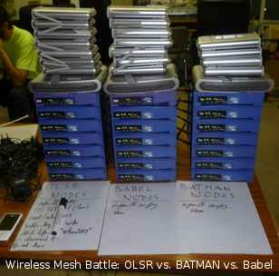

#!/bin/sh

export DATE="14.5.2010";SCRIPT=${0#/rom}
export TITLE="Hello!"
. ${SCRIPT%/*}/cgi-bin-pre.sh

cat<<EOF
<H1>Hello!</H1>
<P>This
is a Freifunk access point running the Freifunk Firmware version 1.7.4

. Read about technical details regarding this access point on the
<A HREF="cgi-bin-status.html">Status Page</A>. Information about the
Freifunk project can be found on the German internet site
<A HREF="http://www.freifunk.net/">http://www.freifunk.net/</A>.
</P>
<DIV><A HREF="http://openwrt.org/"></A></DIV>
<P><B>Please note</B>:
Freifunk firmware and Freifunk webadmin are based on the outstanding Linux
distribution <A HREF="http://openwrt.org/">OpenWRT</A>. OpenWRT (in
contrast to other firmwares) enables you to install new software packages
without the need to wait for firmware enhancements.</P>
<CENTER>

<BR CLEAR="all">
</CENTER>
<H2>Some Links</H2>
<UL>
<LI>
EOF
ff_adm_neturl=$(nvram get ff_adm_neturl)
if [ "$ff_adm_neturl" ]; then
echo "<A HREF="$ff_adm_neturl">$ff_adm_neturl</A></LI><LI>"
fi

cat<<EOF
<A HREF="http://berlin.freifunk.net/">Berlin
Website, DE</A>
</LI>
<LI><A HREF="http://www.freifunk.net/wiki/FreifunkFirmwareEnglish">Freifunk
Firmware Page of Freifunk.net (EN)</A>
</LI>
<LI><A HREF="http://download.berlin.freifunk.net/ipkg/">Freifunk Firmware and IPK
Downloads</A>
</LI>
<LI STYLE="firmwarelinks:0;display:list-item;">Firmware download from this device:<BR> <A HREF="cgi-bin-download.bin?g">WRT54G</A> <A HREF="cgi-bin-download.bin?gs">WRT54GS</A> <A HREF="cgi-bin-download.bin?gs40">WRT54GS-v4.0</A> <A HREF="cgi-bin-download.bin?g3g">WRT54G3G+UMTS</A> <A HREF="cgi-bin-download.bin?a">All0277</A> <A HREF="cgi-bin-download.bin?moto">WR850G</A> <A HREF="cgi-bin-download.bin?se505">SE505</A> <A HREF="cgi-bin-download.bin?trx">WAP54G/WL500</A> </LI>
<LI><A HREF="cgi-bin-dev-zero.bin">Never-ending download from /dev/zero</A>
</LI>
<LI><A HREF="local.html">Local information and news</A></LI>
</UL>
<P><B>Please
note</B>: Internet access over the Freifunk network is bound to technical
and organizational conditions. For this reason, the links to internet web
pages may not work.
</P>
EOF

. ${SCRIPT%/*}/cgi-bin-post.sh
